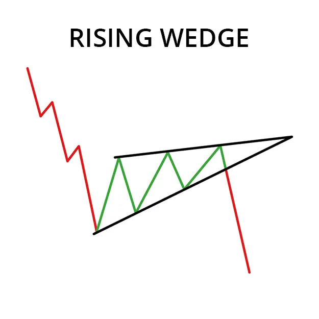
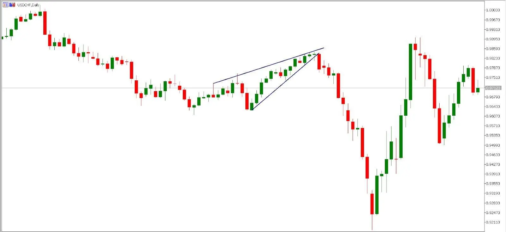

Un cuchillo ascendente de oso es un patrón de gráfico técnico que señala una posible reversión de la tendencia hacia abajo después de una tendencia al alza. Es esencialmente una formación triangular donde el precio oscila dentro de un canal formado por dos líneas de tendencia convergentes, una dibujada conectando los altos más altos y la otra conectando a los bajos más bajos. A medida que el patrón avanza, los altibajos y los bajos se acercan, visualmente se asemejan a una cuña apertada. Esto indica una pérdida de impulso hacia arriba y una presión creciente para romper.
Aquí está una descripción de las características clave de un ganso ascendente de oso:
- Líneas de tendencia convergentes: Las dos líneas de tendencias, una dibujada a lo largo de las máximas más altas y la otra de las mínimas más bajas, deberían converger a medida que avance el patrón. Esto crea el efecto visual de una cuña apertadora.
- Disminución del volumen: A medida que el precio oscila dentro de la cuña, el volumen de negociación tiende a disminuir. Esto sugiere que los compradores están perdiendo interés y los vendedores están ganando control.
- Breakout: El breakout, que confirma el patrón, ocurre cuando el precio se rompe por debajo de la línea de tendencia inferior con un volumen significativo. Esto significa una posible continuación de la tendencia descendente.

Aquí hay algunos puntos adicionales para recordar acerca de los cangrejos ascendentes de los osos de oso:
- Mientras que las cajas ascendentes son generalmente consideradas de origen bearish, a veces pueden actuar como patrones de continuación dentro de una tendencia descendente.
- La fiabilidad del patrón aumenta con la presencia de fuertes señales de confirmación, como el alto volumen en la breakout o la divergencia de la palanca con un indicador técnico como el Índice de Fuerza Relativa (RSI).
- Los cajones ascendentes no son indicadores inescrutables y deben utilizarse en combinación con otras herramientas de análisis técnico y análisis fundamental para tomar decisiones comerciales informadas.
Ejemplo de gráfico en vivo:
